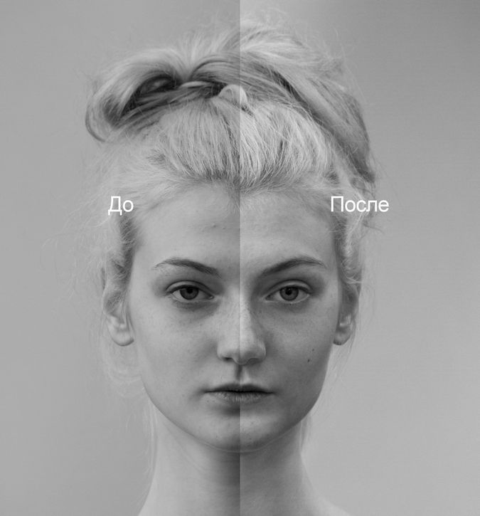
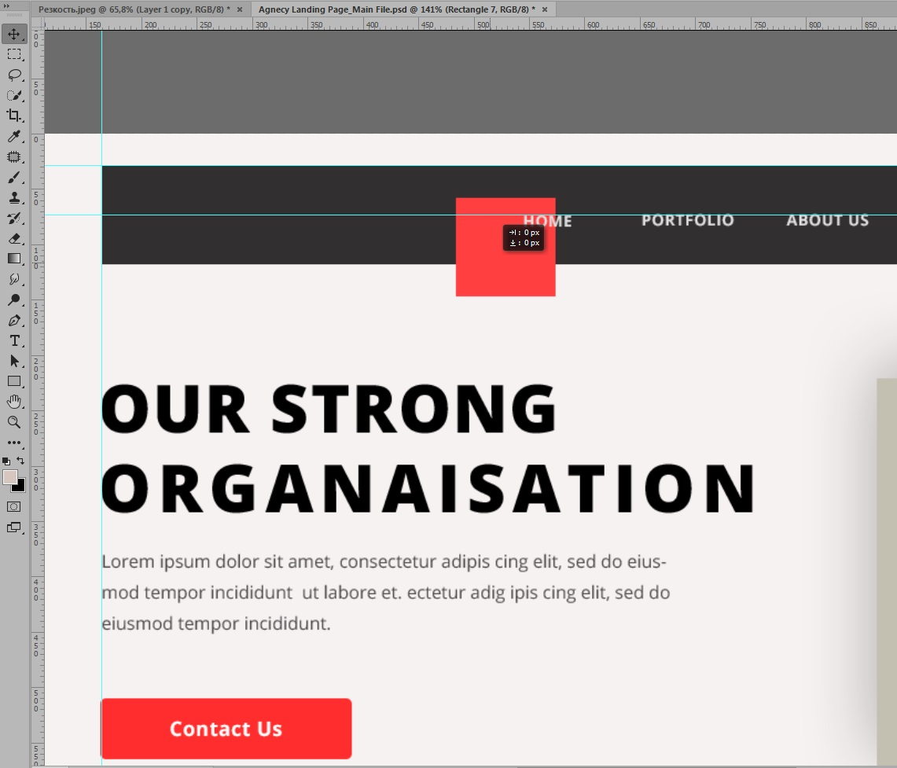

Курс "Основы Photoshop. Обработка фото и графический дизайн."
Программа курса
(кликните на пункт, чтобы узнать подробности)
-
- Как формируется изображение на цифровых экранах разных устройств. Физические пиксели и сабпиксели. Свет и цвет. Три основных цвета, модель RGB.
- Цифровое изображение. Виртуальные пиксели. Глубина цвета и метод хранения информации о цвете. Типы файлов.
- Растровые и векторные инструменты, редакторы и ихображения. Версии фотошопа.
- Основы интерфейса фотошопа. Основные части рабочего пространства. Важные настройки.
- Создание нового изображения. Размер и вес. Разрешение и единицы измерения. Связь между шириной, высотой, разрешением и весом.
- Открытие существующего графического файла
- Сохранение изображения в файл
- Цвет. Цветовые модели, пространства/профили и палитры.
- Выбор цвета, палитра в фотошопе


-
- История, панель истории, снимки
- Слои и история
- Взаимодействие слоев
- Слои, группы, перемещение. Основные операции.


-
- Выделение, основные инструменты выделения
- Изменение выделения
- Быстрая маска


-
- Теория цвета
- Оценка изображения (пипетки, гистограммы)
- Основные инструменты цветокоррекции
- Кривые
- Каналы


-
- Слои заливки
- Корректирующие слои, недеструктивная обработка
- Маски слоя
-
- Растровые маски, создание и редактирование
- Векторные маски
- Обтравочные маски, применение


-
- Режимы наложения/смешивания слоев. Затемняющие, осветляющие, контрастные.
- Примеры использования

-
- Контраст
- Детали в тенях/светах

-
- Приведение цветного изображения к черно-белому
- Раскрашивание черно-белого изображения
- Макияж

-
- Основы работы с фото (стадии работы, планирование, постобработка)
- Цветовой баланс
- Выявление и избавление от паразитного оттенка
- Кривые, точка серого
-
- Резкость фотографии, резкость и контраст
- Способы повышения резкости
-
- Теория ретуши
- Основные инструменты и методы
- Ретушь ч/б, контраст
- Ретушь цвета
 -
- Частотное разложение/ХА и методы борьбы с ней/Обработка raw фотографий

-
- Инструменты верстки, направляющие, создание сетки
- Перемещение и трансформация фигур
- Основы дизайна и верстки (принцип близости, направление движения, якорные объекты)
- Воссоздание макета сайта
 -
- Перо, Кривые Безье
- Векторные иллюстрации
- Пути


-
- Смарт-объекты
- Коллаж со смарт-объектом
- Обтравка векторами

-
- Инструменты обтравки
- Обтравка волос

-
- Финальная работа с использованием полученных знаний – создание сложного коллажа

-
-
- Материалы для самообучения, основные типы материалов, примеры
- Тренировка критического взгляда на свои и чужие работы
- Частые проблемы
- Вопросы и ответы
Темы для дополнительных занятий
-
- Методы борьбы с ХА
- Создание маски границ
-
- Обработка RAW файлов
- Camera RAW + Photoshop
- Lightroom
-
- Создание маски насыщенности
- Создание масок яркости
- Применение
-
- Теория lab
- Цветокоррекция в lab кривыми
- Использование экшенов